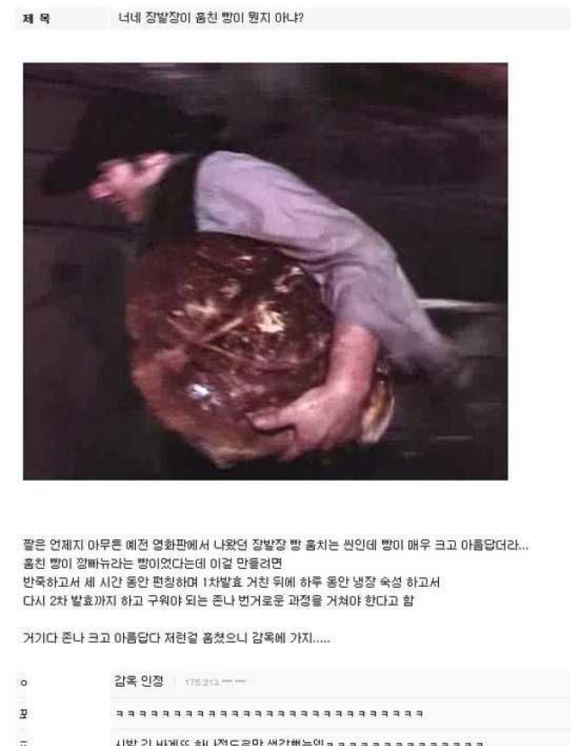
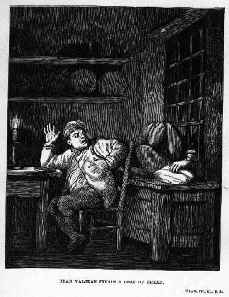
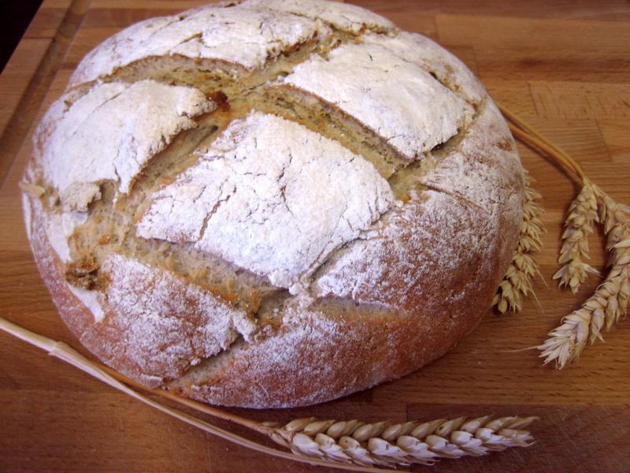
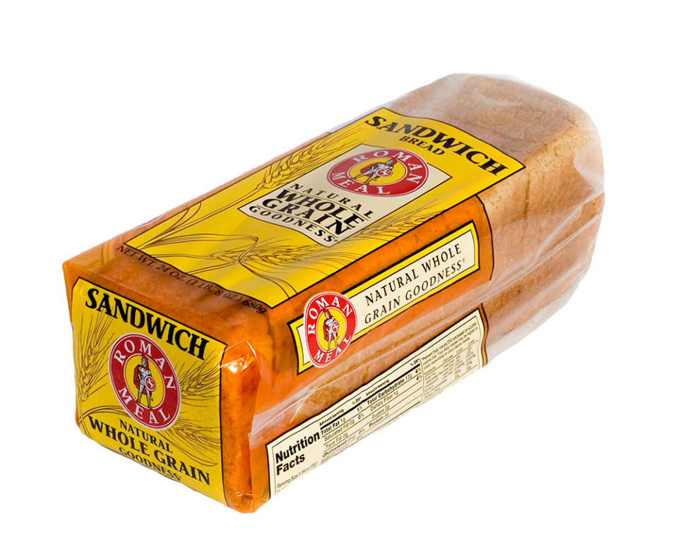
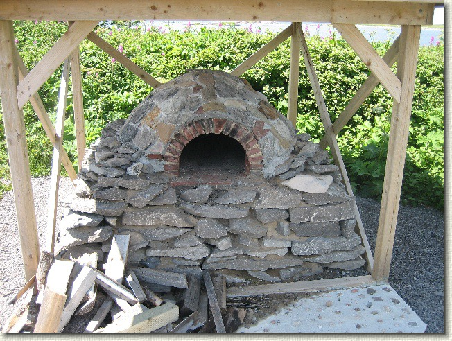
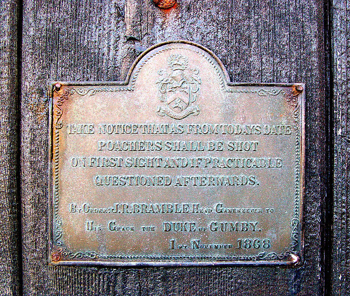
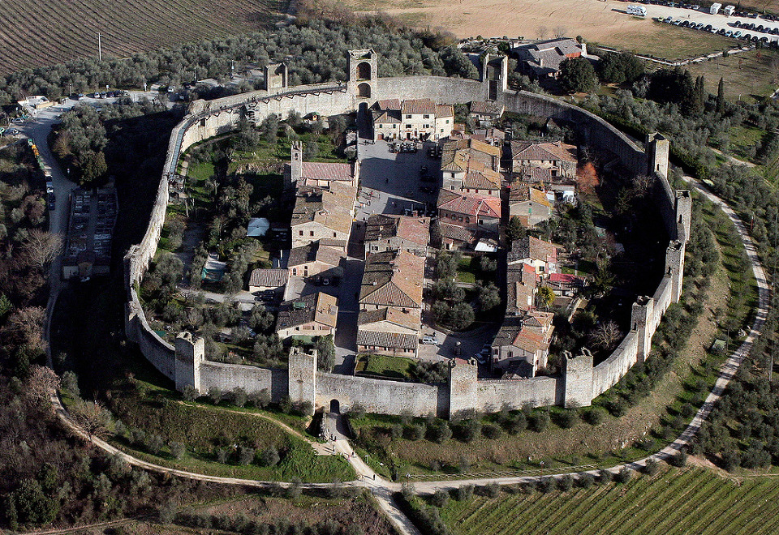
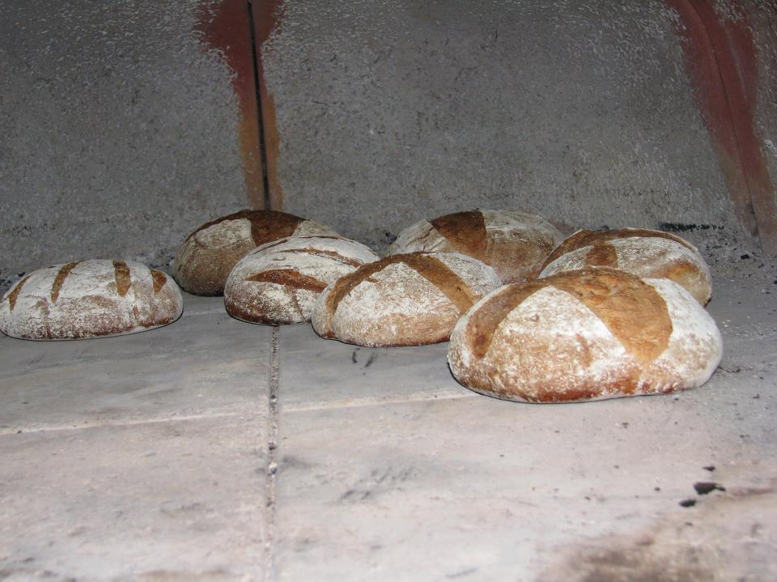
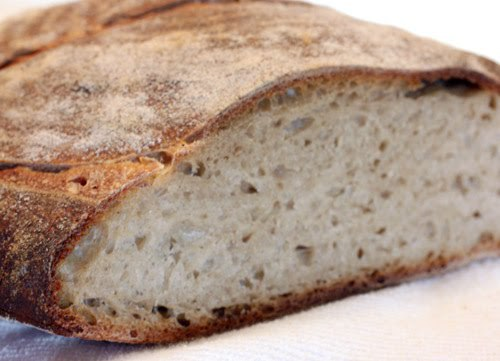
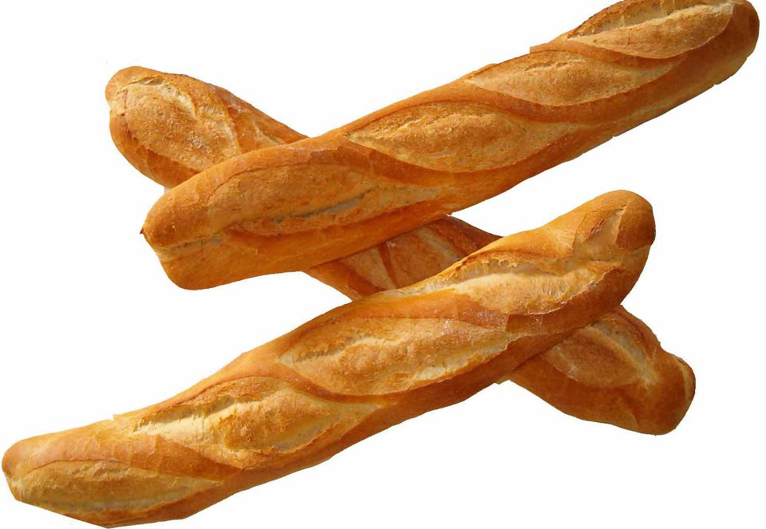

과연 장발장이 훔친 빵의 정체는 무엇인가 ?
게시: 2018-10-11T06:30:00+09:00
전에 인터넷 게시판에 유머 글이 하나 올라온 걸 봤습니다. '장발장이 훔친 빵' 또는 '장발장이 잘못했네' 라는 것이었지요.

(저도 이 게시물 보고 엄청 웃었던 기억이 납니다. 사실 여부를 떠나 웃기쟎아요.)

(하지만 레미제라블에 원래 실렸던 삽화에 실린 그림은 위와 같습니다. 원작 소설에도 쇠창살이 쳐진 빵집 진열장의 유리를 깨고 빵을 훔쳤다고 되어 있으니 빵이 저 인터넷 그림처럼 클 리가 없지요.)
사실 장발장이 어떤 빵을 훔쳤는지는 레미제라블에 나와 있지 않습니다. 혹시나 싶어 원문을 찾아봐도, 그냥 pain(빵)을 훔쳤다라고만 되어 있습니다.
저 영화 속 한장면의 사진 속에 나와 있는 빵은 설명 그대로, 깡파뉴 빵, 즉 pain de campagne가 맞아 보입니다. 불어로 pain이 빵이고 campagne는 country니까, 영어로 하면 그냥 country bread, 즉 시골 빵 정도가 되겠습니다.

이 빵의 특징은 크다는 것입니다. 대략 무게가 작은 것은 4 파운드 (1.8kg), 큰 것은 12 파운드 (5.4kg)까지 나가니까 엄청나게 큰 빵입니다. 보통 식빵 1봉지가 500g 정도되니까, 왠만한 가족 하나가 며칠을 먹을 수 있는 분량입니다.

(코스트코에서 파는 로만 밀 브레드.... 설명을 읽어보니 '고대 로마군 병사들이 하루에 1파운드의 밀빵을 먹고 건강을 유지했다'는 이야기에 따라, 통밀과 잡곡을 섞어 만든 1파운드짜리 빵이라고 되어 있었던 것으로 기억해요... 맛 좋습니다. 그런데 우리집 식구들은 저 빼고는 그냥 흰 식빵을 더 좋아하는 것 같더군요.)
당시 사람들은 왜 이렇게 큰 빵을 구웠을까요 ? 바로 오븐 때문이었습니다.

전에 연재하던 야매요리라는 네이버 만화 저도 즐겨보던 편인데, 거기 주인공인 야매토끼는 집에 오븐이 없어서 항상 '야매'로 전기밥솥이나 마이크로웨이브 오븐을 이용하지요. 제대로 된 가스 오븐은 부자집에나 있는 것이지요.
(이것이 바로 저 빵이 커진 이유라고 할 수 있습니다.)
그런데, 옛날 유럽 사람들에게도 그건 마찬가지였습니다. 오븐이라는 물건은 만드는데도 돈이 많이 들었고, 또 뭔가 구울라치면 연료가 우라지게 많이 들어가는 물건이었거든요. 옛날에는 휘발유나 가스, 전기를 쓴 것이 아니라 숲에서 나는 나무를 장작으로 썼으니까 공짜 아니냐고요 ? 유럽은 중세부터, 숲을 엄격하게 관리했습니다. 그래서, 영주의 허락없이 숲에서 잔나무가지라도 하나 꺾었다가 숲지기에게 잡히기라도 하면 아주 엄벌에 처해졌습니다. 그건 사실 이해가 가는 일인 것이, 그러지 않았다가는 순식간에 숲이 벌거숭이가 되었을 것입니다. 하지만 정작 중세 영주들이 숲에서 허락없이 장작을 해가는 백성들을 처형하고 고문했던 것은, 숲보다는 그 숲에 사는 사냥감을 보호하기 위해서였습니다. 영주들은 숲에서 사냥을 하는 것이 낙이었는데, 숲이 망가지면 짐승들도 사라지거든요. 아무튼 그러다보니 연료를 아껴써야 하는 것은 당시가 요즘보다 더 심하면 심했지 결코 덜하지 않았습니다.

(중세가 아닌 1868년의 어느 영국 숲 입구에 걸린 검비 공작님의 경고문입니다. 밀렵꾼은 즉결 처분으로 총살에 처한답니다...)
그러다보니, 자기 집에서 빵을 구울 수 있는 집은 상당한 부자집이었습니다. 대개의 가정에서는, 밀가루를 반죽하여 발효까지 시킨 뒤, 그걸 마을에 있는 빵집에 가서 구워야 했습니다. 그러니까 중세 시대에 마을에 있는 빵집(bakery)은 빵을 파는 가게가 아니라, 빵을 구울 오븐만 제공하는 마을 공동 오븐 정도에 해당하는 것이었지요. 그러다가 점차 도시가 형성되면서, 아예 빵집에서 완제품 빵을 팔기 시작하면서 빵집이 진짜 빵가게가 된 것입니다.

(이런 마을에 빵집은 몇군데 ?)
근대 유럽 시대까지도, 도시가 아닌 다음에야 마을에 빵집은 1개 혹은 2개 정도 있는 것이 정상이었습니다. 과거 중세 시대부터의 전통이 이어져 내려온 것인가 봅니다. 경쟁이 없었으나, 그렇다고 폭리를 취하는 것도 아니었던 좋은 시절이었나 봐요. 그러다보니, 만약 동네 빵집에 뭔가 문제라도 생기면 마을 전체에 난리가 날 수 밖에 없었습니다. 쌩떽쥐베리가 2차 세계대전 초반에 정찰기 조종사를 할 때 경험을 바탕으로 쓴 수필 '전시 조종사' (Flight to Arras, Pilote de guerre)에 그와 관련된 에피소드도 나옵니다. 독일군이 침공해온다는 소식이 들리자, 순박한 시골 마을 사람들이 피난을 가야 할지 마을에 남아야 할지 의논을 하는데, 의외로 쉽게 결판이 나게 됩니다. 어떤 농부 아저씨가 토론장에 들어서면서 이렇게 외친 것이지요.
"다들 피난을 가는 수 밖에 없게 되었어 ! 빵집 주인이 피난을 가버렸거든 !"
(이 정찰기가 생떽쥐베리가 프랑스의 항복 전까지 몰았던 정찰기 Bloch 174 입니다.)
아무튼, 오븐을 빌려서 빵을 굽던 시절, 비싼 연료비 때문에 빵은 매일 구울 수 있는 물건이 아니었습니다. 또, 보통 한번 구울 때 여러집의 빵을 한꺼번에 구워야 했기 때문에, 작은 빵을 여러개 굽는 것은 불편한 일이었습니다. 같은 오븐에 집어넣은 다른 집들의 빵과 뒤섞이기 쉽쟎아요. 그러다보니, 되도록이면 크고 알흠다운 빵을 한번에 구워 며칠씩 두고 먹는 수 밖에 없었습니다.

(저 빵 3개는 순이네 꺼고, 저 빵 2개는 철수네 꺼고... 아니 저 빵이 철수네 꺼고 이 빵이 호섭이네 꺼든가 ?)
이렇게 구운 커다란 깡파뉴 빵, 즉 시골 빵은 대개 단단하고 수분도 적은 편이었습니다. 특히 며칠씩 두고 먹다보니 빵이 말라서 더욱 딱딱해졌지요. 가끔 옛날 영화보면 오븐에서 '갓 구운 빵'을 오븐에서 꺼내면 식구들이 좋아라하는 모습이 나오지요. 그럴 수 밖에 없는 것이, 그런 시골 빵에는 버터나 쇼트닝 같은 것을 안 썼고, 또 비닐 봉지도 없고 냉장고도 없었기 때문에, 하루만 지나도 빵이 마르고 딱딱해지기 쉽상이었기 때문에, 부드러운 빵을 먹을 수 있는 기회는 오븐에서 막 꺼냈을 때 뿐이었습니다.

(맛있어 보이나요 ? 강남 김영모 빵집의 비싼 빵과는 좀 맛이 다를 것 같습니다.)
요즘은 세상이 좋아져서 저렇게 빵을 무식하게 크게 구울 필요도 없어졌습니다. 빵집에서 제일 큰 빵이라고 해봐야 바게뜨 정도인데, 사실 바게뜨도 저런 시골 빵에 비하면 엄청나게 작은 것입니다. 실은, 바게뜨 빵이 나온 이유에 대해서 재미있는 전설(?)도 있습니다.

(중국집 솜씨를 보려면 짜장면을, 빵집 솜씨를 보려면 바게뜨를 먹어보면 됩니다.)
전설치고는 너무 최근의 일인데, 1920년 전후로 프랑스의 노동법이 바뀌어 밤 10시부터 새벽 4시 사이에는 제빵사가 일을 해서는 안되게 되었답니다. 그런데, 저 깡파뉴 빵처럼 크고 둥근 빵을 새벽 4시부터 굽기 시작해서는 도저히 도시인들의 아침 식사 시간 때까지 구울 수가 없었습니다. 그래서 나온 것이 길쭉하지만 굵기는 얇은 바게뜨라는 것입니다. 저런 법이 나온 것은 사실이지만, 실제로는 바게뜨처럼 길쭉한 빵은 19세기 후반에 이미 널리 먹고 있었다고 하니까 이 전설은 어디까지나 전설에 불과합니다. 그나저나 프랑스의 저 노동법이 아직도 있는지는 모르겠으나, 저같은 임금 노동자 입장에서는 정말 부러운 법이네요. 국내 도입이 시급합니다 !
** 목요일엔 예전 다음 블로그에 썼던 글을 티스토리로 옮기고 있습니다. 이건 2013년에 썼던 글인데, 맨 마지막의 국내 도급이 시급하다는 말이 당시엔 절실했는데, 어느덧 주 52시간 근무제가 현실화되었네요. 세상은 발전합니다.